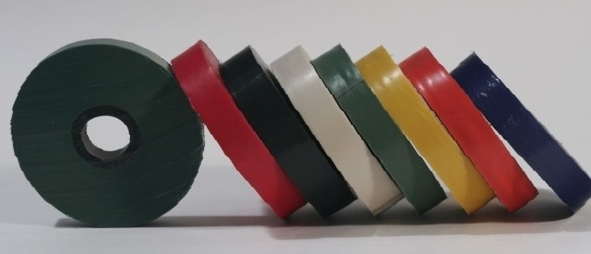

Сервомоторы, серводвигатели, сервоприводы, а из чего это всё делают? Материалы для электромашиностроения.
Электроизоляционные материалы
Использование достаточно современных материалов, в том числе электроизоляционных, улучшит ТЭП(технико-экономические показатели) для проектируемого электрооборудования. Электроизоляционные материалы должны обладать соответствующей устойчивостью к нагреву и механической, электрической прочностью. Чем меньше толщина, тем лучше.
В наше время наблюдается значительный прогресс в области повышения устойчивости к нагреву для электроизоляционных материалов. Изоляция класса А сейчас мало используется, класс больше подходит для оборудования малых размеров. В основном, применяются классы устойчивости к нагреву В и F. А для специальных машин и оборудования, работающего в трудных условиях, предусмотрен класс нагревостойкости H.
Материалы для электроизоляции подразделяются по назначению. От первых требуется больше всего высокая электрическая прочность и высокая механическая прочность, это могут быть материалы для защиты основных материалов от механического воздействия, материалы, изолирующие катушки обмоток.
Группы материалов
Электроизоляционные материалы делят на:
- Неорганические волокнистые материалы.
- Слюдяные материалы.
- Пленочные и бумажные изоляционные материалы.
- Вспомогательные материалы.
Для неорганических волокнистых материалов основой может служить стекловолокно или асбест. Такой материал отличается хорошей устойчивостью к механическим воздействиям, устойчив к разрыву, обладает малой гигроскопичностью, устойчив к нагреву, в зависимости от того как лаком пропитать.
Бумажные и пленочные материалы содержат синтетические смолы. Направление развивается и очень перспективно. Устойчивы к нагреву, высокая, прочность к электрическим и механическим воздействиям и малая толщина. Фениловая бумага, синтолий активно осваиваются на производствах.
Слюдяные материалы c применением дроблённой и щепаной слюды, также дают хорошие характеристики в плане сопротивления механическим и электрическим воздействиям. Отлично держат нагрев и влагоустойчивы.
Слюдяные материалы:
- Слюдиниты.
- Cлюдопласты.
- Миканиты.
Cлюдиниты и слюдопласты сейчас потеснили миканиты, так как для последних нужна щепаная слюда, а это товар относительно дифицитный.
Вспомогательные материалы применяются, для изготовления сборочных единицы или крепления обмоток отдельного электрооборудования.
В данной статье мы ещё не рассматривали проводниковые материалы, например, для обмоток серводвигателей, это будет темой следующей статьи.